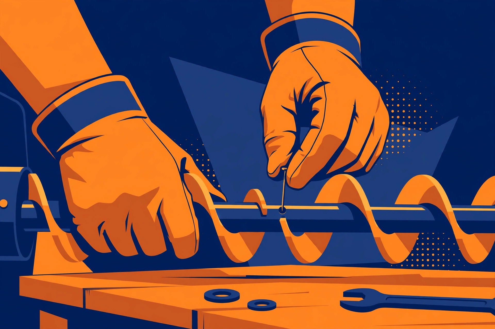

A snowblower rarely fails at a convenient moment. It fails halfway up the driveway, in falling snow, with a car that needs to get out. At that moment the difference between a ten-minute pause and a lost weekend is not skill — it is whether the small part that just gave up is already sitting in your garage. This guide builds that spares kit properly: what belongs in it, what is merely nice to have, and how to make sure the parts you buy actually fit your machine.
Why shear pins and belts top the list
A shear pin — sometimes called a shear bolt — connects the auger to its shaft. It is deliberately the weakest link in that connection: when the auger strikes a rock, a chunk of ice, or debris buried in the snow, the pin breaks so the impact stops there instead of travelling into the gearbox or transmission. That is the pin doing its job, not a defect. The symptom is distinctive: the engine runs, but the auger will not turn, or one side of the auger turns while the other does not.
Belts fail differently. An auger belt or drive belt stretches, cracks, frays, and glazes with use, and a belt that slips under load will eventually snap or stop driving altogether. Owner discussions of spares consistently put the same two items first — shear pins and belts — followed by a spark plug, and that ranking is really a ranking by stranding risk: lose either of the first two and the machine is out of action until a replacement arrives.
The must-have kit: parts that strand you without them
Stock these first. Each one is small, each one is model-specific, and each one ends your day if it fails without a spare on the shelf.
- Shear pins or bolts, in a multi-pack. Pins are consumables by design. Buy the exact part specified for your model, keep several, and store a couple with the machine itself so a mid-storm swap does not start with a search through the garage.
- The auger belt. On a two-stage machine this belt drives the auger and impeller — the parts that actually move snow. If it snaps, the engine runs and nothing throws.
- The drive belt, if your machine has a separate one. Many two-stage machines use one belt for the auger and another for the wheel drive. A machine that throws snow but will not self-propel is only half-fixed, so know how many belts your model uses and stock each type.
- A spark plug matched to your engine. A fouled plug is a classic no-start, and a plug is cheap insurance that takes minutes to swap. Record the exact plug type from your manual rather than guessing at the store.
- The retaining hardware for your pins. Pins are secured with nuts or cotter-style retainers depending on the design. A new pin without its retainer is not a repair — keep the matching hardware in the same bag.
Comparison: must-have, nice-to-have, and order-ahead parts
| Part | Tier | Why |
|---|---|---|
| Shear pins / bolts + retainers | Must-have | Designed to break; auger stops until replaced |
| Auger belt | Must-have | No belt, no throwing — even with a healthy engine |
| Drive belt (if separate) | Must-have | Loss of self-propel makes heavy snow far harder |
| Spark plug | Must-have | Common no-start cause; quick, basic swap |
| Fuel stabilizer | Nice-to-have | Protects fuel during gaps between storms and storage |
| Clean-out tool (replacement) | Nice-to-have | The original gets lost; a clog must never be cleared by hand |
| Friction drive wheel | Order-ahead | Usually wears gradually with slipping, so you often get warning |
| Skid shoes and scraper bar | Order-ahead | Wear items you can inspect and schedule, not storm-day surprises |
The friction wheel is the clearest example of the order-ahead logic: owners and technicians note that it typically degrades gradually, showing up as increasing drive slippage rather than a sudden stop. That warning buys you time to order the correct part — unlike a shear pin, which gives you no warning at all.
Fitment first: the part number is the whole game
None of this works with almost-right parts. Shear pins are engineered to break at a specific load for a specific machine. A generic pin, or worse, a standard hardened bolt substituted for one, may be too hard to break when it should — and then the energy that was supposed to snap a small pin goes into the gearbox instead. Aftermarket pins can also vary in material and dimensions enough to fail early. The safe rule is simple: use the genuine or exact-equivalent part your manufacturer specifies for your model.
So before you order anything, do the unglamorous step that makes the kit real. Find the model and serial information on your machine, open the operator manual or parts list for that exact model, and write down the part numbers for the shear pins, each belt, and the spark plug. Keep that list in three places: in the manual, in a note on your phone, and on a label in the spares box itself. Belts deserve the same care — belt listings are organised by model series and dimensions, and a belt that is close but not correct will slip, wear fast, or not fit at all.

Procedure: replacing a shear pin safely
This is the repair the kit exists for. It is a basic job on most machines, and your manual's version for your model always wins if it differs.
- Shut the engine off and disconnect the spark plug wire so the engine cannot start accidentally while you work.
- Clear any jammed snow, ice, or debris from the auger housing with the clean-out tool or a stick — never your hands.
- Find the broken pin on the auger shaft and remove what remains of it, including any fragments left in the housing.
- Rotate the auger by hand until the holes in the auger and the shaft line up.
- Insert the correct new pin through both holes and secure it with its proper nut or retainer, snug but not over-torqued — the pin is designed to break, and crushing it defeats the point.
- Check the pin on the other side of the auger as well; repeated failures on one machine are a signal to look for packed ice, a bent auger, or the wrong pin.
- Reconnect the spark plug wire, start the machine, and engage the auger briefly in clear space to confirm both sides turn smoothly before going back to work.
What success looks like: both auger sections turn together when engaged, there is no rattling from loose fragments in the housing, and the machine throws snow evenly across its full width instead of leaving a stripe on one side.
Decision framework: how deep should your kit go?
Match the kit to your situation, not to a generic list. If a parts store is ten minutes away and open seven days, the must-have tier plus a plug may be plenty. If you live where a storm can close roads, if your machine uses less common parts, or if a blocked driveway strands a car you depend on, stock the full must-have tier in duplicate and add the order-ahead wear parts in autumn. The forum wisdom on this is blunt: distance from parts sources is what turns a minor failure into a major one. Decide in October, when ordering is easy — not in January, when the same part is a special order and the driveway is full.
Finally, treat the kit as a living thing. Every time you use a spare, replace it in the kit that same week. A spares box you raided in December and never restocked is just a box. A two-minute check of the box belongs in your pre-season routine, alongside checking the pins and belts already on the machine for cracking, fraying, glazing, and wear.
FAQ
Can a regular bolt stand in for a shear pin in a pinch? No — not safely. The pin is meant to break at a set load to protect the gearbox. A harder substitute can refuse to break and pass the damage on to far more expensive parts.
How many shear pins should be on hand? At least a multi-pack for your model: pins are consumables, storms can break more than one, and the whole point of the kit is that the next pin is already in the garage.
The auger turns but the machine will not move. Is that a pin? That pattern points away from the auger pins and toward the drive side — a worn or broken drive belt, or a worn friction wheel that is slipping. Work through the drive components in that order.